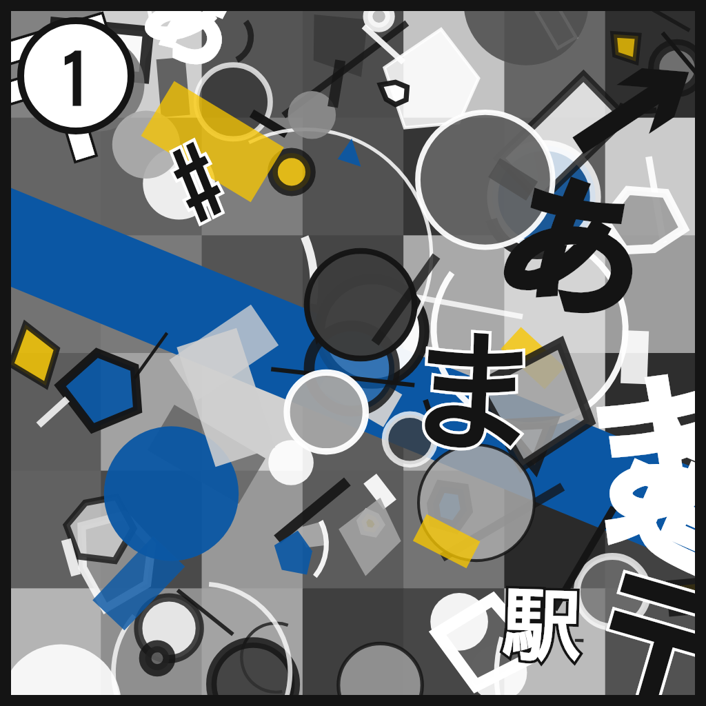
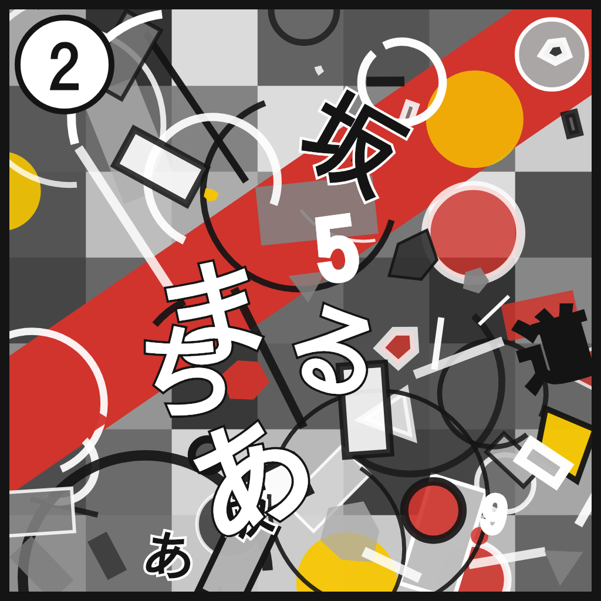
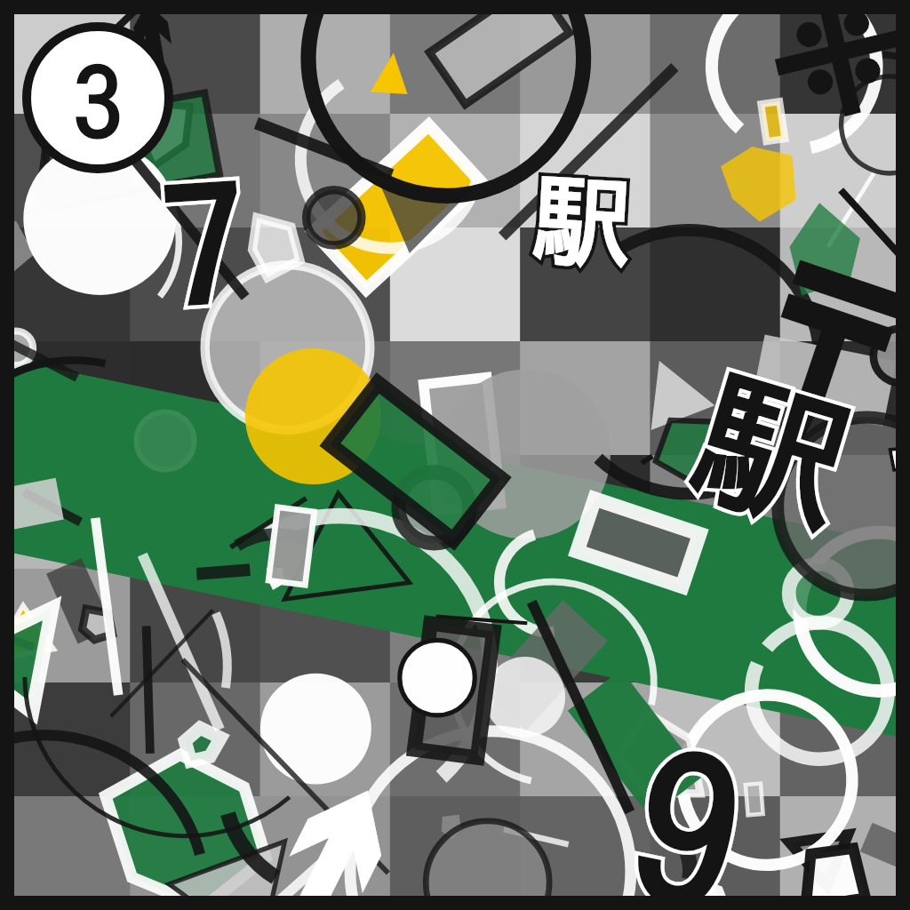

課題研究 / 企画づくり
判定中…
スマートフォンで開いてください。このQRを読み取ると、このページが開きます。
紙が手元にないときは、別のスマホやPCの画面にこの画像を出して、それにかざしても動きます。



▶ 印刷用ページ（A4・マーカー＋QR）
▶ AR がうまく出ないときの診断ページ
中身を変えたいときは config.js を書き換える → 保存 → 再読み込み。 詳しくは README
config.js